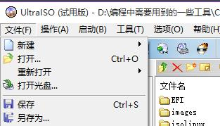
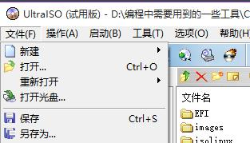

Linux 安装
方式-U盘安装
准备工作
- U盘（大于1G，大于4G可以制作标准版安装盘）
- UltraISO 软件 --用于制作启动预判U盘
- Centos7镜像文件
荐使用阿里镜像下载：https://mirrors.aliyun.com/centos/7/isos/x86_64/
CentOS-7-x86_64-DVD-1804.iso 标准版 CentOS-7-x86_64-Minimal-1804.iso 最小版
制作U盘

荐使用阿里镜像下载：https://mirrors.aliyun.com/centos/7/isos/x86_64/
CentOS-7-x86_64-DVD-1804.iso 标准版 CentOS-7-x86_64-Minimal-1804.iso 最小版
